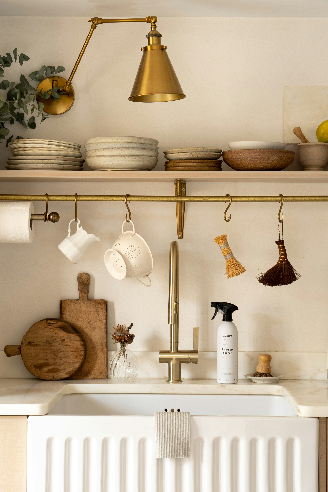

Keittiön siivous helpoksi
Puhtaan keittiön ei tarvitse tarkoittaa tuntikausien siivousurakkaa. Näillä vinkeillämme pidät keittiön puhtaana ja raikkaana ilman turhaa vaivaa.

Puhtaan keittiön ei tarvitse tarkoittaa tuntikausien siivousurakkaa. Näillä vinkeillämme pidät keittiön puhtaana ja raikkaana ilman turhaa vaivaa.
